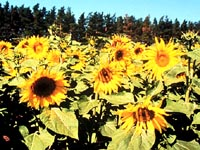

Sunflower is the only oilseed native to the northern Great Plains of North America. Early explorers found it in common use by the American Indians. It was introduced to Spain, France and England and soon spread across trade routes across Europe and Asia.
In Russia it was developed as an oilseed crop and today about 25% of the world sunflower oil is produced in the former USSR. Argentina, France and the United States are also major producers of oilseed sunflower.
Why grow sunflower?
Sunflower is attractive to growers as an alternative cash crop usually grown under contract. The new early maturing type offers producers in short season areas the opportunity to diversify rotations. It has the agronomic advantages associated with a large seeded, drought tolerant crop. The large seed allows for deep seeding in dry conditions. It roots deeper and can
utilize nitrogen and moisture from lower soil levels. Drought and heat tolerance are higher than for canola, flax or mustard making it a good stubble crop in the dark brown and black soil zones. The new shorter, early maturing types are expected to do well in the brown soil zone.
Sunflower may be chosen as an alternative to canola since it is not attacked by most canola insects except cutworm, is immune to blackleg and has no chlorophyll in the seed to cause downgrading. Sunola has a more stable yield than canola over a wide range of environments. In addition, the high stalks remaining after harvest make excellent snow traps.
Where is it produced?
Canada produces about 0.6% of the world supply of sunflower oil, with 90% of the western Canadian
production grown in Manitoba. Many of the older sunflower varieties
require 120 to 130 growing days. They also require more moisture than other oilseeds. As a result, most attempts to grow sunflower in Saskatchewan have
been in the southeast part of the province.
New early maturing varieties are making sunflowers an alternative crop for Saskatchewan farmers.
How much do we produce?
In Saskatchewan about 20,000 acres of hybrid oilseed sunflowers are grown annually. Over the last five years the provincial average yield has been about 40 kg/acre.
Production has been limited because the traditional hybrids require specialized equipment and are adapted only to the long growing season areas in southeastern Saskatchewan. Recently new types of sunflowers, Sunola and Sunwheat, have been developed which overcome these limitations. They are shorter in stature allowing for seeding and harvesting with the same equipment used for cereal or canola production. They are much earlier maturing allowing for production across a larger area of the province.
What does it look like?
There two types of sunflower that were developed as alternate oilseed crops for the prairies; sunola and sunwheat.
Sunola is a miniature sunflower. It was developed at the Agriculture Canada Research Station in Saskatoon as an alternative crop for areas where traditional
sunflowers cannot be grown. Sunola has the desired qualities of early maturity, short stature and
high oil content. It is referred to as miniature because of reduced height, leaf size and head diameter compared to most sunflower
varieties currently available.
- Sunola reaches a height of 60-90 cm (24-36 in) and has a head 8-13 cm (3-5 in) in diameter.
- It is extremely early maturing, early enough to be grown in canola growing areas.
- It requires 99 to 103 days to maturity, about the
same as recommended varieties of Canada Western Red Spring Wheat and three weeks earlier than most available sunflower varieties.
- The seed oil content is equal to the best sunflower hybrids and 4-7% higher than canola.
- Sunflower seed increases in oil content and quality as it is grown further north. Sunola, grown in Saskatchewan, has been found to produce oil higher
in linoleic acid than any other commercially produced sunflower.
- Meal protein levels are also slightly higher than most hybrids. Sunola has yielded 12% to 17% higher than canola in trials in western Canada.
Sunwheat is a dwarf hybrid sunflower. It has a leaf
and head size similar to other hybrids but is a single headed plant and has a shorter internode resulting in a plant of shorter stature, 96-120 cm tall. It matures in 100-110 days and has an oil content slightly lower than Sunola. Sunwheat has an
advantage in sunflower growing areas when planting is delayed to mid-May to mid-June due to adverse conditions.
Sunwheat has shown it to be more suited to arid areas and able to withstand periods of summer heat better than some other crops.
How is it produced?
Production practices for growing the early-maturing types of sunflower are generally similar to those for the traditional hybrids. Seed quality is
important; high germination, varietal purity and freedom from weed seeds are necessary to establish a good stand.
Sunflower seed is sold by weight and number. Sunwheat is hybrid and new seed must be purchased each year. Sunola is open pollinated. It can cross pollinate with wild sunflowers and purchasing new seed from a registered seed grower would ensure that the seed was true to variety.
Sunflowers prefer a well-drained soil with near neutral pH (6.5-7.5). It is grown in fields that have not grown canola, mustard sunflowers, lentils or fababeans within the last 4 year to reduce the chance of sclerotinia infection. Sunflowers do not grow well in fields with serious weed problems. Planting sunflowers near sloughs and shelterbelts encourages crop attack from crows and blackbirds.
Fertilizer requirements are determined by soil testing and following the recommendations for wheat or barley. Sunflower seeds are very sensitive to soluble salts from fertilizer applied with the seed.
Sunflowers have the ability to use a large volume of soil for water. They should be seeded on soils that have a large water holding capacity and do not have layers that restrict rooting depth. Sunola will root to depths in excess of 1.5 metres. The roots of Sunwheat may extend even deeper. Maximum water use occurs during the middle of the growing season when temperatures are high and the crop canopy is well-developed. Plants can survive longer and wait on moisture under dry conditions but they also dry out a field more than other crops for the following year.
Seeding dates for sunflowers are similar to most crops grown in Saskatchewan. For proper germination seeds require soil temperatures of 10oC. Normally this temperature is reached about mid-May. Sunola requires a growing season length similar to wheat in any particular area and seeding dates should be adjusted accordingly so that plants reach maturity before damaging frosts occur. It can tolerate about 3oC of frost after flowering without harming seed production.
Sunwheat yields and oil content have been best when planted roughly between May 20 and June 15. It can withstand a frost reasonably well after 80-85
days. Spring sunflower seedlings can withstand some frost. Temperatures cold enough to damage the growing point will cause plant branching.
All the short stature varieties can be seeded with conventional seeding equipment such as hoe or press drills, airseeders or discers.
The number of days to maturity of any sunflower variety may vary depending on temperature, relative moisture distribution and fertility levels during
the growing season. Physiological maturity has been reached when the back of the head has turned from green to yellow and the bracts are turning
brown. Sunflowers are harvested when their seed moisture content is about 40%.
Is there a market for sunflower?
Grade standards for sunflowers are set by the Canadian Grain Commission. Grades are affected by maturity, odour, heat damage, insect damage, amount
of cracked or dehulled seed and the amount of foreign material. Seed sold into the U.S. market will be graded by U.S. standards.
Both sunflower and canola oils have the potential to increase their share
of the market because they are higher quality oils, usually sold at a premium. Canadian sunflower oil contains over 70% polyunsaturated fatty acids and content and quality increase when it is grown further north.
This makes it attractive for the market trend toward products that help to reduce blood cholesterol levels.
Oil consumption in Canada is increasing due to the growth of the fast food industry and although Canada produces enough oil for export it presently does not produce enough sunflower oil for its own domestic market. The former USSR is the major world producer of sunflower oil but it is a net importer of oil because it cannot meet the domestic demand.
|